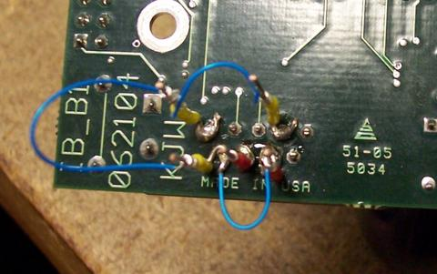

|
|||||||
| [ Home ] | [ Software ] | [ Curriculum ] | [ Hardware ] | [ Community ] | [ News ] | [ Publications ] | [ Search ] |
|
1.1. IntelliBrain-Bot
The
1.2. Technical Information"The IntelliBrain main board provides the brain power, as well as twenty one sensor ports and two servo motor ports to control the robot’s motion. The IntelliBrain controller’s LCD display, two push buttons, thumbwheel, buzzer and infrared universal remote control receiver provide an easy to program user interface. The IntelliBrain controller’s powerful Atmel ATmega128 microcontroller and copious memory provide ample computing power to execute advanced robot control algorithms. The IntelliBrain expansion board can be used to expand the IntelliBrain controller to add four DC motor ports, six servo ports, seven analog ports, eight digital ports and more."
1.3. Connecting
1.3.1. Wired
For wired connections through USB we have found that the "FTDI US232B USB to Serial Adapter" and the Radio Shack We have also found that some serial cords don't work. If you can't figure out what is wrong try connecting with another cord.
1.3.2. Bluetooth
We used the Solder similar colored pins together.
Effectively "spoofed" Handshaking  We provided power with an external adapter. Alternatively you could connect pin 9 on the DB9 connector to the adapter as the voltage is +5v.
We've been told that Aircable's
1.3.3. Bluetooth PairingWe were working under Debian GNU/Linux on a 64bit machine. In order to pair bluetooth devices we found that the best steps to use are as follows:
The Bluetooth devices should now be paired. You should be able to do anything with "/dev/rfcomm0" that you can do with any other serial connection. More Bluetooth information Using the Hemisson Robot
1.4. More InformationBesides the normal functions(move(), translate(), rotate(), & range()) there are three more included. beep() Causes a system beep led(input) Turns on Main Board Leds Possible input values are 1(right Led), 2(left Led), 3(Both), 'empty' (all off) stop() Turns off both servos and all Leds
Next: Using the Roomba Up: PyroHardware |
| [ Home ] | [ Software ] | [ Curriculum ] | [ Hardware ] | [ Community ] | [ News ] | [ Publications ] | [ Search ] |
 View Wiki Source | Edit Wiki Source | Mail Webmaster
View Wiki Source | Edit Wiki Source | Mail Webmaster | |||||||